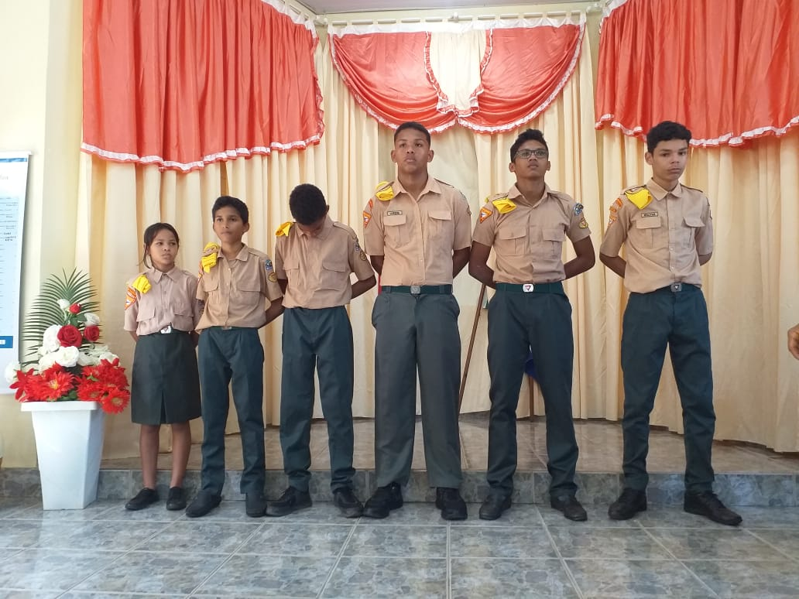

A cerimônia de lenço é a transformação do aspirante em desbravador. A entrega do lenço é um momento muito especial para os garotos, pois e quando eles são reconhecidos oficialmente como Desbravadores.
O Clube Átrios, da igreja Santa Mônica, foi reativado no inicio do ano de 2022. Após alguns messes da sua reabertura os aspirantes a lenço foram a adimitidos no 11 de julho de 2022. Além da admissão dos aspirates, os lideres também foram admitisos em lenço. Da liderança foram admitidos o lider do clube: Evandro; a diretora associada; Fabiana; a secretaria: Debóra; o capelão: Eduardo; a conselheira: Nilde.